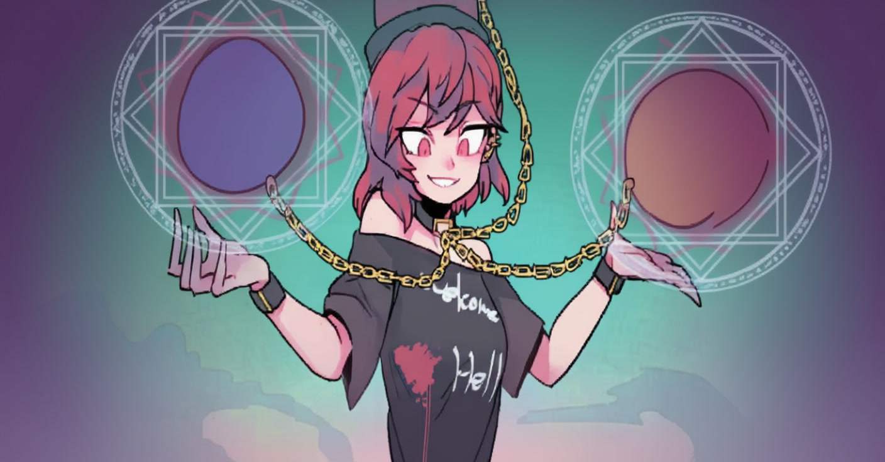

伪娘转生到
淫乱世界跑团 RPG!Ver. 2.2
第零章：死亡，重生和教程
某一天早上你从床上起来，准备去做日常工作。当你正从家里出来时，一辆大卡车突然出现在路上。瞬间，你的视野陷入一片黑暗……等你清醒过来时，你发现自己并不在医院里，而是在一个像是天堂般的地方，一位穿着花哨的女神正一边笑着一边俯视着你。被那东之国称为“异世界转生”的事件似乎发生在了你的身上。你决定抛弃你的过去，在这个新的幻想世界开始自己新的生活！
文字颜色标识
| 剧情文字 |
基本的故事文字 |
| 任务文字 |
你需要完成的任务 |
| NPC对话 |
故事中出现的人物的台词 |
| 服装文字 |
施述了你必须穿着的服装 |
| 种族被动 |
某种族的特定被披动任务 |
| 祖咒文字 |
每沮咒系统相尖的文 |
| 敌方种类 |
描述敌人种类的文字 |
| 阴茎特征 |
需要使用的自慰棒的特征 |
| 关健道具 |
特殊事件中需要使用到的道具 |
地狱轮盘女神

Yo! 欢迎米到地狱! 开玩笑的。我们正在被你们称作地狱边境的地方。你可能死了，然后被送到这里米了。怎么说呢，最近天堂和地狱好像都装下更多人了，所以最近几十年的死者都能得到我们的特別优惠/可以转生到最近的异世界哦～我这个最资深的轮盘女神会监督你的旅程。你在路上可能会遇到我的姐妹们，记得代我向她们打声招呼，她们可能会帮一把的! 你要在旅途之中打败恶魔领主。他们用淫秽邪恶的魔法腐蚀了这片大地。我会给你祝福，让你获得特殊的能カ和属性后，重生于那片大地的，库库库。可惜的是，作为轮盘之神，我的力量其实是......随机的。所以你可能会死掉然后又回到我这里来......我好像不小心剧透了......别担心! 不管你死了多少次，我都会把你一次又一次复活 直到你打败恶魔领主的，呐～
前一任恶魔领主死后，一切都变了。一位高阶魅魔取缔了他的位置，这个世界上所有生物都必须遵守的新的视则被制定。现在世界正处于ー片混乱之中，所有人都在像动物一样交配! 听好了，这就是这个世界的规则!
在我们的旅途开始之前，让我先来说明下这个异世界是怎么回事吧。你被赐予了轮盘或者骰子之カ。你投出的点数决定了你接下来的行动。看到下面的骰子了吗，试试点击它。在任何事性开始前，投一次骰子，投出的点数决定了事件的结果。
地图教程

该图是你的旅程的一副示例地图。让我们来看看每个回合都会发生什么..
第一回合——你遇到到了一个战斗事件，所以你需要与一名敌人发生战斗。当你打败了敌人，或是披敌人打败之后，你可以前往下一个格子。
第二回合——你遇到了一个随机事件。你需要完成一个你所在地区的随机事件。当你完成了随机事件的行务后，你可以前往下一个格子。
第三回合——在岔路口时，你可以自行决定前进的方向。例如，你可以前往宝箱格子。在你投完宝箱事件的骰子后，可以返回到上一个格子。
第四回合——你必须进行另一个随机事件。当你返回你已经经过的格子时，事件会被再次触发。所以当你选择你的路线时一定要小心哦~
第五回合——我们终子鼓起勇气來挑战这一关卡的BOSS了!
注意休息！ 在完成一个格子中的所有事件后，在你继续前进前，可以选择休息一天，第二天再继续桃战。但是你不可以在某个格子的事件中途中断。打败魔王的放途非常艰辛，好好淮备吧!
战斗事件教程
你需要动用你强大的智慧來在战斗中击败你的敌人.....不对! 你需要用你的魅力来征服你的敌人。你的攻击カ由你的诱惑力决定，而你的 HP 则由你的理智决定。在新规则的引导下，这个世界所有的战斗都变了性爱战斗。在你的回合，你必须诱惑你的对手，让他们兴奋直至屈服干你。他们也会对你做同样的事情。只要双方同意，任何行为都是披允许的。即使是昆虫或考是植物也遵循这一规则，因为制约这这个世界中的所有生物。就算我也是哦～嘿嘿～
你决定进攻时，你必须投一枚骰子，来决定此次攻击的方式。每个种族都有三攻击方式，分別会对敌人理智造成不同的伤害。不过，如果你的敌人在你的攻下存活，他们下回合就会对你发动反击。投出一枚般子来决定你的敌人的攻击式。如果你承受住了对方的攻击，那么重复此过程，直到一方被打败。
战斗败北
如果你在性爱战斗中输了那么你就必须承受失败的后果。你知道的，他们可以对你做任何事情～你的惩罚取决于你敌人的种类。你每败北一次，就会被加上一层相应的沮咒。当某种诅咒叠加到第四层时，你就会死掉然后返回我这里～请查看诅咒系统来了解更多。
战斗胜利
如果你赢得了战斗，你的对方通常会留下一些可供你在战斗中使用的道具。
道具使用
你可以在战斗中使用道具，但是每个回合只能使用一个道具。
HP 恢复
战斗胜利后不会回复你的 HP。你可以使用道具回复 HP。当你战斗败北后，将会回复所有 HP。
战斗流程
在战斗开始时，你将先发动进攻。投一枚骰子决定你的攻击方式。然后再投一枚骰子决定敌人的攻击方式。计算伤害后，若双方都仍然存活，则继续下一回合的攻击。
所有的攻击/披攻击回合至少为持续不间断的5分钟，你可以延长时间以便你满足某些任务要求。
若你未完成你的攻击任务，则此次攻击视为未命中。你将无法对敌人造成伤害。
骰子点数 1-2 [弱击]
进行你的[弱击]攻击方法
你的攻击カ减半
骰子点数 3-4 [有效]
进行你的[有效]攻击方法
你的攻击カ保持不变
骰子点数 1-2 [会心]
进行你的[会心]攻击方法
你的攻击カ翻倍
特殊技能
[特殊技能]是你的王牌。每场战斗只可使用一次。你可以在投掷骰子前使用你的特殊技能。每个种族都有能与她们的特性协同增效的特殊技能。使用这些技能能极大地扭转战斗的形势。有策略地使用它们吧。
随机事件
哦不，你好像在旅行中遭遇了一次随机事件呢～ 随机事件大致分为两种：恩惠事件和苦难事件。每一章都有它们独立的恩惠和苦难事件，去章节中查看吧～ 苦难事件是你必须进行的一些对你不利的任务，而恩惠事件则是可以给你带来一些好处的任务，例如道具，治疗，移除迫咒等。
骰子点数 1-3 苦难事件
再投一次骰子,决定你将要进行的苦难事件。
骰子点数 4-6 恩惠事件
再投一次骰子，决定你将要进行的恩惠事件。
注意:未来的章节可能有着不同的随机事件规则。
自慰棒使用教数学
自慰棒在大量事件中被便用。下面列出了一些敌人肉棒的属性和如何将它们应用到自慰棒上的例子。
[多汗] 将自慰棒泡在盐水中
[耻垢] 在自慰棒的尖端加上芝士和盐
[多毛] 将毛发(阴毛或任意毛发) 固定在自慰棒的根部
尺寸指导
[小号阴茎]: 9-12cm
[中号阴茎]: 13-15cm
[大号阴茎]: 16-18cm
[特大号阴茎]: 19-22cm
道具使用教学 
在旅程中，你可以从敌人掉落、宝箱和随机事件中获得道具。请多多收集金币吧!
如何伎用道具
很多道具在战斗中都是很实用的，并且大多数都只能使用一次。有的道具也可以战斗外使用，但可能要求你必须先完成一个特殊任务。
战斗中使用的道具
你可以在战斗中使用道具 这并不会花费你的回合。不过，每个回合开始前，你只可以使用一个道具。
特殊道具
任何带有 [关键道具] 标签的道具都是不能在战斗中使用的特殊关键道具。它们只能在特殊事件中被使用，且只能使用一次。任何带有 [可重复伎用] 标签的道具都是以重复伎用的道具。